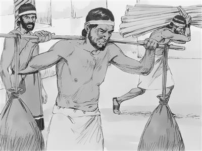

Paulusti yubu elkae
Filemon
sembe mome toro pibogha
El nenerop yubu
Yesusti samenag wepto poghogne Paulus ponekori mome nene toro pibog. Eldi mome nene anam tomna komag, yubu walinge Yesus sembe ambarelamsiogpa, ora nimiri san tilibaekti, sae kaupto kop aeag tobongkibekti, as soro kalurop as Roma poa piekpa, Paulus wamog. Tam nene sembe Lukas ponekori samenag mome toro pibog (Pogsiognangdi Ulameka pasal 22-28 tanekoag keknep). Paulusti as Roma wamoghag, Onesimus haiptarek.
Onesimus poneko samenag nimi arukna wamog aghana, Onesimus ili wamoghag agha tognoro lambaog. Roma nimi, mog so'o ngainangdi samenag ul palameknena, nimi arukna tanekori kamna tomna koma yog nimiringe awe tolamek. Roma nimi nubunangdi yubu sia paibekne sunsunum uro, nimi arukna tanekona, nimi wamek aghana, ora nimiri nimi arukna nene sae kaupto kamna kapto torobag pil palamsiekpa, “Nari awe tolamukang,” aro arukna nene kamna kapto tolamsiekti, sikini taek. Nimi arukna nene pham to, kam to nenelamsiloa saog uro kamna kapto tolamsiekti, sikini taekpa, nimi arukna tolamsiekne neneko sikiniri saeag aghabog wamek. Sikiniri arukna nene sembe, “Ya'ag obukap,” sembaho tanena, arukna neneko tebahoba, Roma nimi nubunangdi yubu sia paibekne sunsunum uro, nimi nhondi babe arukna neneko pelebanep kom. Yubu sia paibekne neneko li ko'oag, Onesimus poneko nimi arukna wamog. Arukna wamogti, ili wamoghag agha tognoro lambaogpa, weag pibom agha nubu as Roma piogti wamog.
Onesimus poneko Roma wamoghag, Paulus babe yin saleropnangdi, “Ae anea lambaleag,” aro Paulus yae wamek. Ik nhon sum Paulusap Onesimusap haiptarekpa, Paulusti yubu pere agha Onesimus ponekori Yesusag “Sikne,” aro wana palilamog. Paulusap Onesimusap lelamdekag agha, Paulusti el taogti, “Nangkae Filemondinge arukna nene tognoro piori, nanag yaori, Onesimus haiptanomo,” aro el taog. Paulusti samenag elkae Filemonag Yesus sembe yubu ambarogpa, Filemondi Yesusag “Sikne” aro wana palilamog.
Filemondi Yesusag “Sikne” aro wana palilamog aghana, nimi arukna tam nene anam seneragna koma, samenag nimiri ul palamekne sunsunum uro ul pirop. Roma nimi nubunangdi yubu sia paibekne sunsunum uro, nimi arukna tognoro lambaog tanena, nimi nhondi arukna nene yepto pelebanep kom. Filemondinge arukna Onesimus tognoro piogne sembe, ili Filemondi, “Tebalul,” senep. “Tebalul,” seho tanena, Roma nimi nubunangdi yubu sia paibekne sunsunum uro, Paulusti Onesimus pelebanep kom. Pelebanep kom aghana, anamag Paulusti elkae Filemonag yubu mome toro pibog. Paulusti samenag elkae Filemonag Yesus sembe yubu ambarogpa, Filemondi Yesusag “Sikne” aro wana palilamogpa, Paulusti wene elkae Filemonag, “Onesimus anag yaleba, waban koma topsom,” aro molorop yubu nene mome toro pibog.

Samenag ul palameknena, nimi arukna tanekori kamna tomna koma yog nimiringe awe tolamek. (1:0)